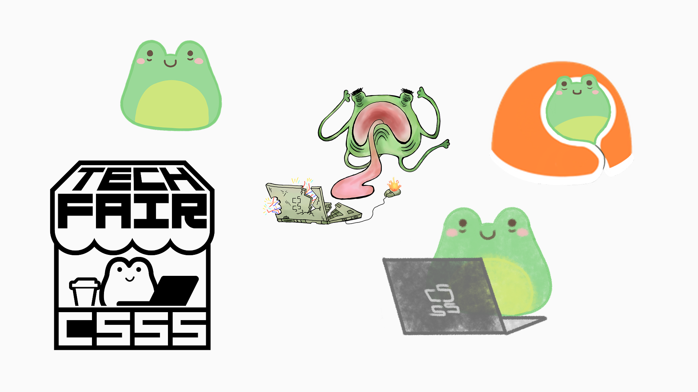
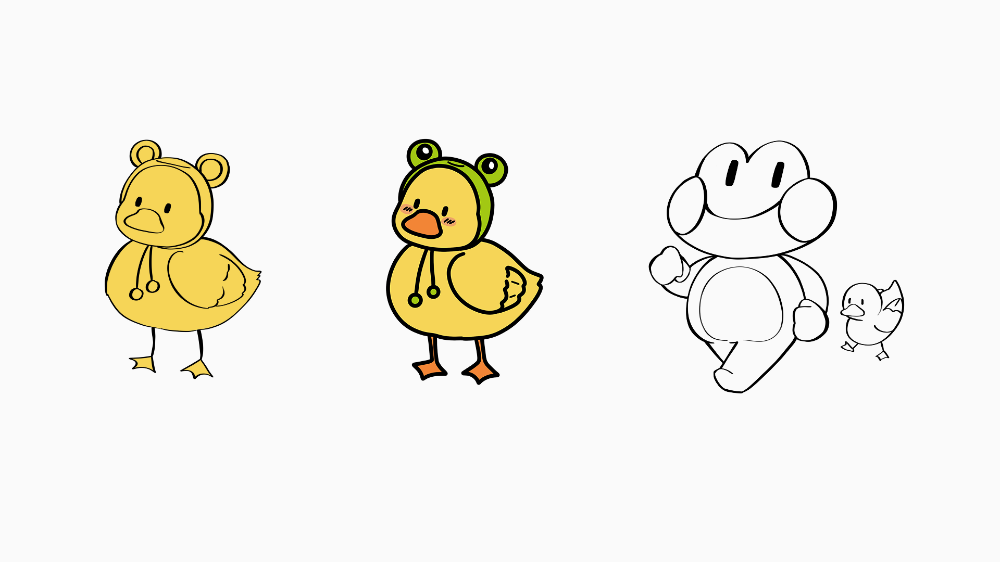
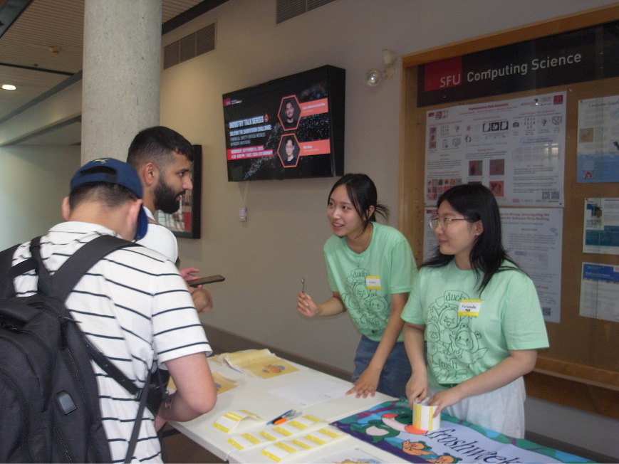
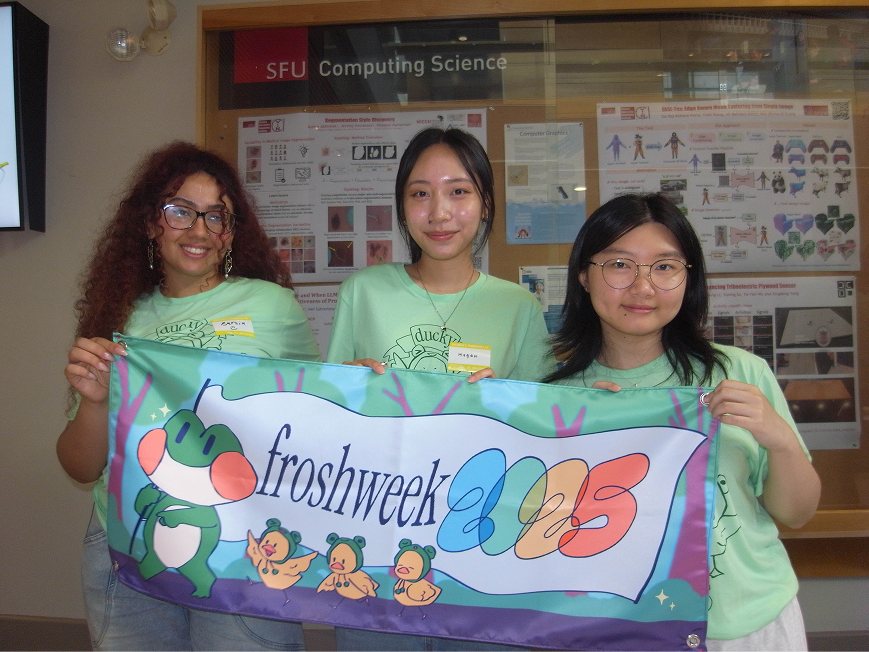
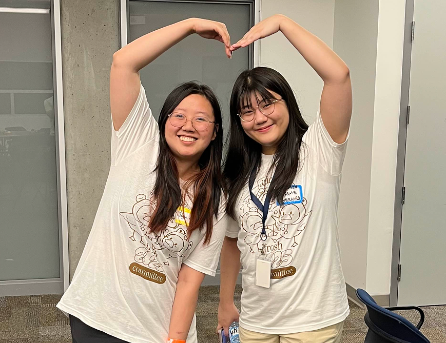

I was responsible for developing a cohesive design system for both physical merchandise and digital promotions that reflected the identity of the Computer Science Student Society while appealing to incoming first-year students.
Overview
The Computer Science Student Society, better known as CSSS is one of the biggest student-led organizations in SFU. As a result, first-year students may feel intimidated by its reputation. My goal was to soften the image of the CSSS to appeal to new students, while also maintaining its identity.
I was given the theme of "Ducky Frosh", so the final designs and illustrations I created had to incorporate a duck 🐥
Process
Looking into existing designs
My first step was to look at the existing branding of the CSSS. I was given references for a frog mascot that appears occasionally in club promotions, but it was not commonly put to the front. I thought that the frog mascot was a good opportunity to expand on the cuteness potential of the CSSS!

What about the ducks?
I turned a doodle of a duck into a vector line art and from there, I began to iterate on the design of the duck as well as the typeface. I wanted to be able to overlap the letters, so I drew vector illustrations of each letter I wanted.
To combine the two...
After a round of feedback, my custom "ducky" font was deemed too hard to read, so I had to take a step back from that. The doodle-y style of the fonts were very visually appealing, so I iterated more into that. How could I effectively combine the theme of "ducky frosh" with the already existing CSSS mascot?
I did many skteches and ended up with a duck wearing a frog hat. That was the solution to my ducky conundrum.

Final assets delivered
The final assets I handed to the CSSS were of the official Frosh 2025 visual, the T-shirt logos, as well as the Frosh 2025 banner design. All of the art assets were illustrated in Procreate, then brought to Figma for formatting.
Final Product
The final designs resonated strongly with both organizers and attendees. Post-event survey results conducted by the CSSS showed that this year’s Frosh art direction was considered one of the most memorable and successful branding initiatives in the club’s history.



Reflection
One key takeaway from this project was the importance of deeper exploration and iteration, especially with typography. I noticed that I often gravitate toward my first few ideas and refine them extensively, rather than branching out and experimenting more broadly early on.